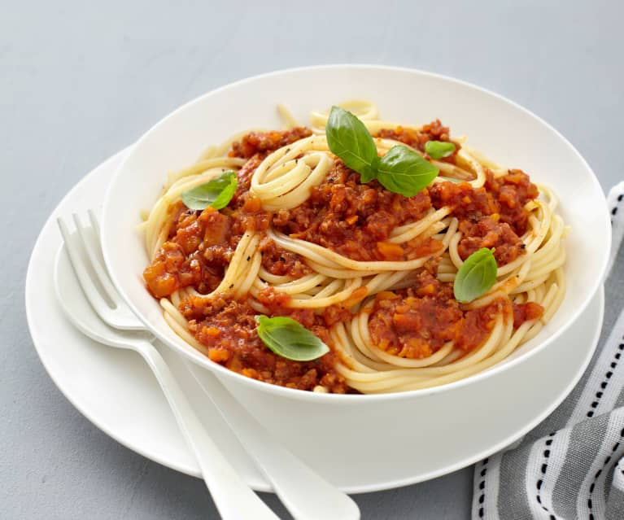

Bolognese

Description
This is an ultra-short, yet wonderfully chewy and incredibly rich bolognese!
It is one of the most popular bolognese I make.
Ingredients
- 2 tablespoons olive oil
- 1 pound ground turkey
- ¾ cup chopped carrots
- ½ cup chopped onion
- ½ cup chopped celery
- 4 cloves garlic, minced
- 1 tablespoon ground thyme
- 1 pinch red pepper flakes
- ¼ cup dry white wine
- 2 cups tomato sauce
- ½ cup tomato juice
- 2 tablespoons dried parsley
- 1 (8 ounce) package penne pasta
- ½ cup grated Parmesan cheese
- salt and ground black pepper to taste
Steps
- Heat olive oil in a large skillet over medium heat.
- Add ground turkey and cook until browned, about 5 minutes.
- Add carrots, onion, celery, garlic, thyme, red pepper flakes, and wine.
- Cook, stirring occasionally, until vegetables are tender, about 5 minutes.
- Add tomato sauce, tomato juice, and parsley. Cook, stirring occasionally, until sauce is thickened, about 5 minutes.
- Add penne pasta and cook, stirring occasionally, until pasta is al dente, about 5 minutes.
- Add Parmesan cheese and salt and pepper to taste. Serve immediately.
Home